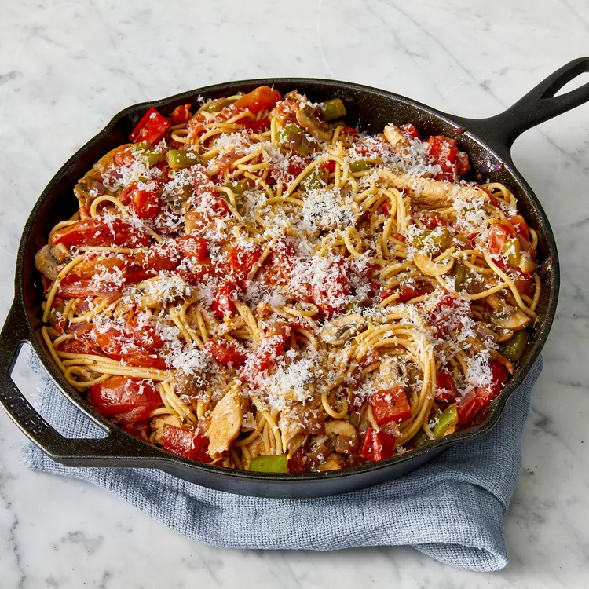

Skillet Chicken Pasta

Description
This chicken pasta skillet meal is a tasteful combination of vegetables, chicken, and pasta prepared in a cast iron skillet.
It only takes 35 minutes with very few dirty dishes! Serve over rice.
Nutrient packed with 43 grams of protein and 768 calories per serving!
Ingredients
-
½ (8 ounce) package spaghettini
-
5 tablespoons olive oil, divided
-
8 roma (plum) tomatoes, halved and sliced
-
1 teaspoon garlic powder
-
½ teaspoon dried oregano
-
2 teaspoons dried basil
-
1 pinch salt
-
1 teaspoon ground black pepper
-
1 ½ teaspoons white sugar
- 1 tablespoon ketchup
- 2 skinless, boneless chicken breasts, cut into thin strips
- 2 garlic cloves, crushed
- 1 green bell pepper, chopped
-
1 red bell pepper, chopped
-
1 red onion, chopped
-
1 cup sliced fresh mushrooms
-
¼ cup grated Parmesan cheese
Steps
-
Bring a large pot of water to a boil over high heat. Stir in spaghettini and return to a boil. Cook pasta until it has cooked through, but is still firm to the bite, 6 to 8 minutes. Drain well and keep warm.
-
Heat 2 tablespoons oil in a large skillet over medium heat. Stir in tomatoes; cook until they soften and begin to break down. Stir in garlic powder, oregano, basil, salt, pepper, sugar, and ketchup. Heat sauce through and reserve.
-
Heat remaining 3 tablespoons oil in a separate cast iron skillet over medium heat. Stir in chicken; cook until browned. Stir in garlic cloves; cook for 1 additional minute.
-
Remove chicken from skillet and reserve. Turn heat to high. Stir bell peppers, onion, and mushrooms into the skillet and cook until they begin to soften. Stir in browned chicken. Turn heat to medium and cook until chicken is no longer pink in the center and vegetables are cooked through, about 5 minutes.
-
Toss chicken and vegetables with tomato sauce and hot pasta. Serve sprinkled with Parmesan cheese.
Homepage